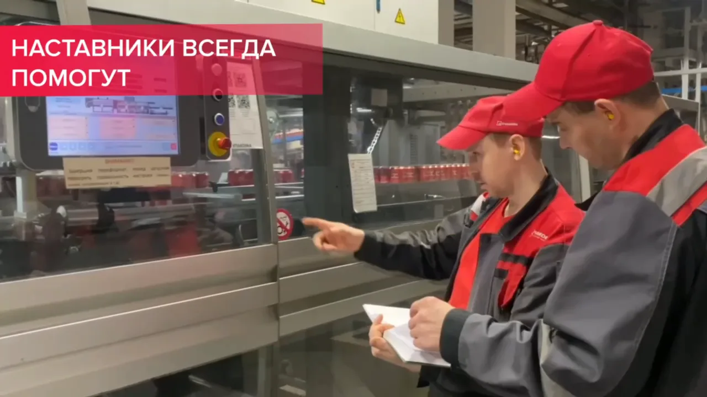

Посчитай свой заработок
Ссылка в профиле
Короткие ролики «Очаково»
Обложки первых 12 выпусков из docs/brand/clips.md. Одна система для всех рубрик: сверху знак и рубрика, в середине кадр, внизу вопрос первого кадра крупно. У рубрики «Квасыч отвечает» красная обложка с крупным знаком ответа, а когда появятся позы Квасыча, в рубрике появится и он. Обложка 06 служит шаблоном: кадр и сумму даёт герой выпуска.
Голубым отмечены места, где на телефоне лежат шапка, подпись и кнопки. Текст обложки держим вне этих зон. Размеры зон сняты с интерфейса приложения на телефоне, перед запуском их сверяют на своём аккаунте.
Титры вшиты в видео: в соцсетях смотрят без звука. Две строки по центру, белый текст на тёмной плашке, шрифт сайта. На финальной карточке одно действие и ссылка в профиле, метка ролика стоит в самой ссылке.

Титры. Кадр из ролика компании «Оператор линии розлива».
Финальная карточка. Последние 2 секунды ролика: одно действие.